Configuración de IP dinámica sobre interfaz física.
Índice
Introducción
Ejemplo 3 — Configuración de IP dinámica sobre un bridge
Creación del bridge Gateway
Asignación de la interfaz física al bridge
Eliminando la configuración aplicada
Eliminación del cliente DHCP
Introducción
A lo largo de esta práctica volveremos a trabajar sobre la configuración de la interfaz que actuará como gateway, obteniendo su dirección IP de un servidor DHCP, pero en lugar de configurar un cliente DHCP sobre la interfaz física ether1, realizaremos la configuración sobre un bridge.
Un bridge en RouterOS es una entidad lógica que actúa como un switch virtual, permitiendo agrupar varias interfaces físicas para que funcionen como un único segmento de red. La dirección IP, las rutas y los servicios de red se aplican al bridge, no a los puertos individuales, lo que permite separar claramente la configuración de red del hardware físico.
Esta abstracción aporta ventajas operativas clave. Por un lado, permite que varios puertos físicos del dispositivo se comporten como una única red lógica. Por otro, si un puerto físico falla o necesita ser sustituido, basta con retirarlo del bridge y añadir otro puerto, sin modificar la dirección IP, las rutas ni los servicios asociados. De este modo, la red sigue funcionando sin cambios estructurales y se reducen tanto los tiempos de intervención como la probabilidad de errores.
Desde el punto de vista conceptual, es importante interiorizar que:
• Las interfaces físicas actúan como puertos.
• El bridge actúa como un switch lógico.
• La dirección IP se asigna al bridge, no a cada puerto.
Ejemplo 3 — Configuración de IP dinámica sobre un bridge
Este tercer escenario representa una evolución del modelo inicial de configuración, introduciendo una capa de abstracción que aporta resiliencia frente al fallo de un puerto físico.
Para ello, se creará un bridge al que se añadirá la primera interfaz del router. La configuración de red se aplicará sobre este bridge, y no directamente sobre la interfaz física. A continuación, se configurará un cliente DHCP en el bridge, se analizará la información de red recibida automáticamente y se verificará que el router puede comunicarse correctamente a través del bridge sin necesidad de configurar manualmente el direccionamiento IP.
Creación del bridge Gateway
En primer lugar, vamos a listar los bridges configurados en nuestro router, ejecutando el siguiente comando:
interface/bridge/print
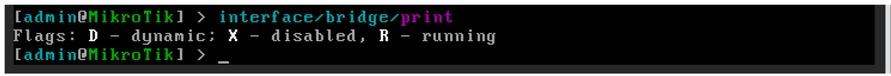
Podemos observar cómo no hay ningún bridge configurado por defecto.Vamos a crear el bridge que actuará como Gateway de la red, ejecutando el siguiente comando:
interface/bridge/add name=bridge-gateway comment=”Bridge Gateway”
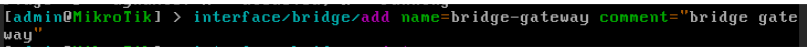
Verificamos que todo ha ido bien:
interface/bridge/print
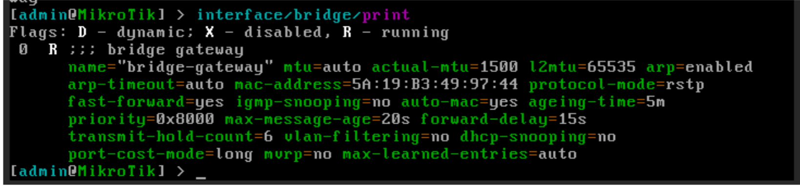
Asignación de la interfaz física al bridge
Vamos a listar los bridges configurados en nuestro router, ejecutando el siguiente comando:
interface/bridge/print
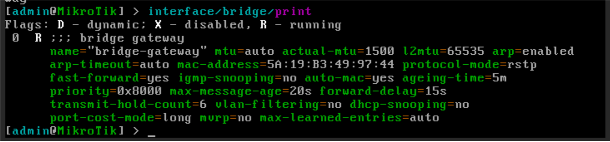
Añadimos la interfaz ether1 al bridge “bridge-gateway”:interface/bridge/port/add bridge=bridge-gateway interface=ether1
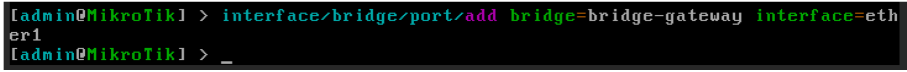
Una vez añadida al bridge, ether1 deja de ser el punto lógico de red. El punto lógico pasa a ser el bridge. Verificamos que todo ha ido bien:interface/bridge/port/print
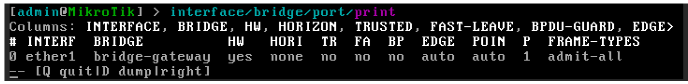
Creación del cliente DHCP en la interfaz ether1
Antes de continuar, vamos a comprobar que la interfaz ether1 y el bridge “bridge-gateway” no tienen asignada ninguna IP, tal como hemos visto en los tutoriales anteriores:
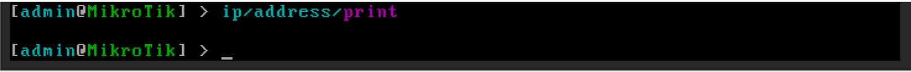
ip/address/print
Una vez nos hemos asegurado de que la interfaz y el bridge no tienen asignada ninguna IP, podemos crear el cliente DHCP sobre el bridge:
ip/dhcp-client/add interface=bridge-gateway disable=no
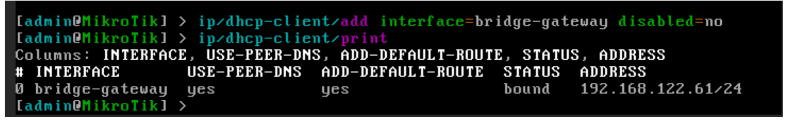
Como podemos observar en la captura, para comprobar los clientes DHCP activos ejecutando el comando:ip/dhcp-client/print
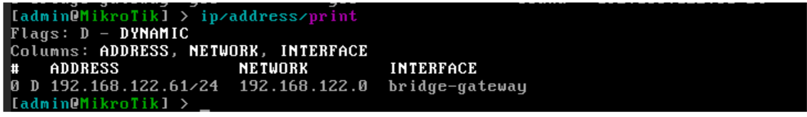
En mi caso, el servidor DHCP de la red NAT ha asignado la IP 192.168.122.61/24, al bridge. Esta información la podemos obtener también desde el listado de IPs asignadas a interfaces, con el comando:ip/addresses/print
Si queremos obtener información detallada de la configuración asignada por DHCP, podemos ejecutar el siguiente comando:
Ip/dhcp-client/print detail
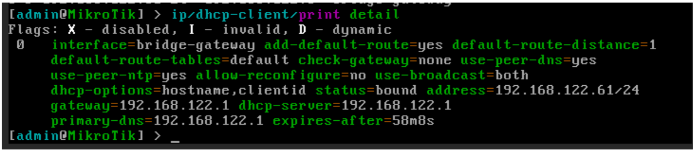
En la captura podemos observar, entre otros:• La IP asignada.
• La Puerta de enlace de la red
• La IP del servidor DHCP
• La IP del servidor DNS primario
• …
También podemos comprobar la configuración asignada por DHCP (IP, ruta por defecto y servidores DNS) ejecutando los siguientes comandos:
Ip/address/print
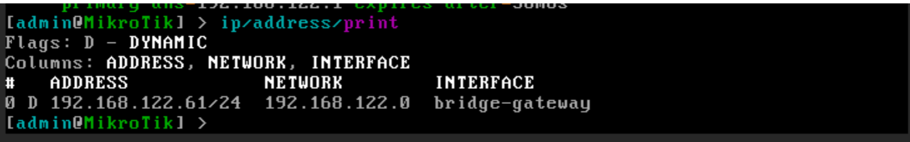
Ip/route/print
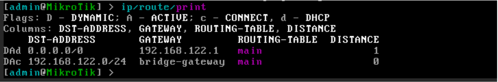
Ip/dns/print
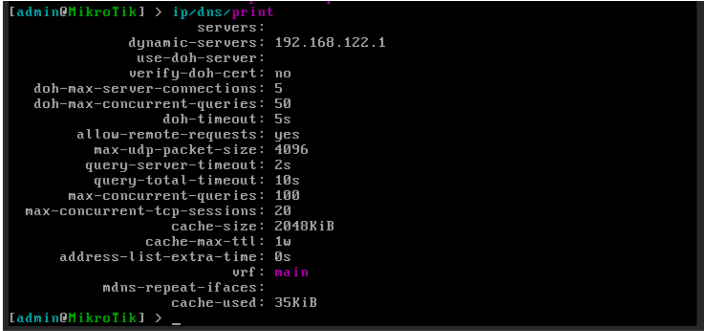
Por último, Podemos probar la conectividad de red, ejecutando un ping a Google.com, por ejemplo, mediante el comando:Ping google.com
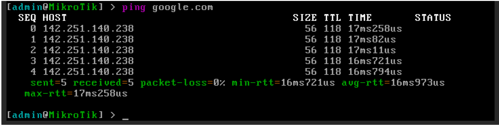
También podemos acceder al router utilizando un navegador web de la máquina anfitrión, a través de la IP configurada: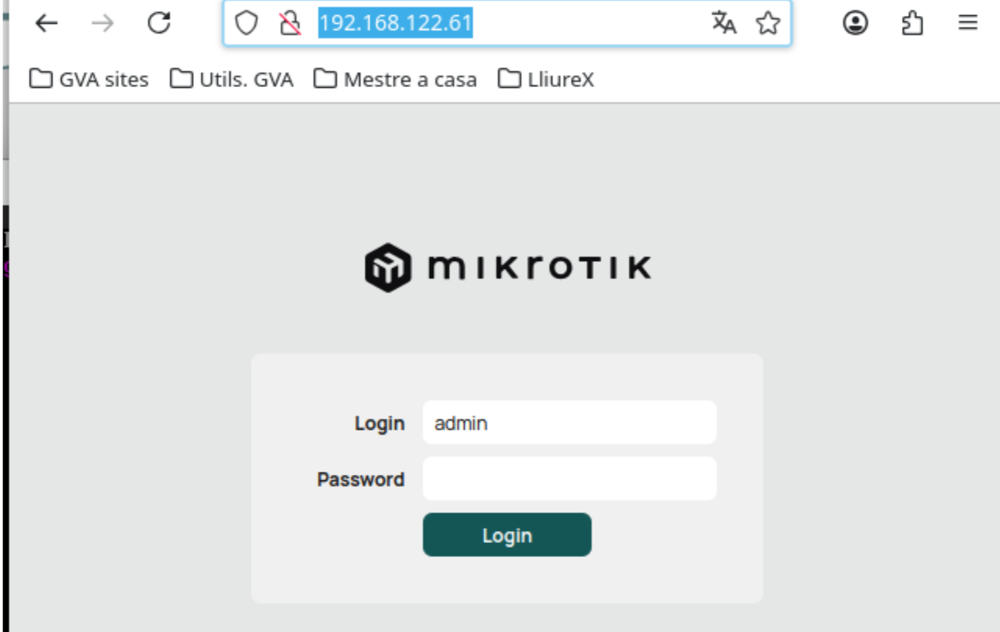
Eliminando la configuración aplicada
Antes de continuar, vamos a eliminar toda la configuración aplicada al router, para volver a tener un dispositivo limpio.
Eliminación del cliente DHCP
Para mostrar los clientes DHCP configurados, ejecutamos el siguiente comando:
ip/dhcp-client/print
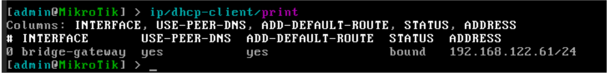
Para eliminar el cliente DHCP ejecutamos el siguiente comando:Ip/dhcp-client/remove <<índice>>
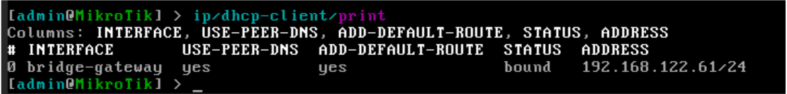
Al eliminar el cliente DHCP, se eliminará toda la configuración aplicada por el mismo. Podemos comprobarlo ejecutando los siguientes comandos:Ip/address/print
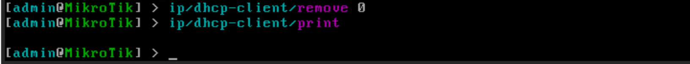
Ip/route/print
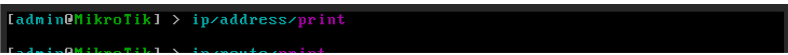
Ip/dns/print
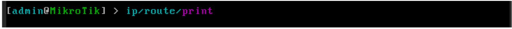
Ya tenemos nuestro router sin configuraciones por defecto, preparado para la siguiente práctica.Preguntas
1. ¿Qué es un bridge en RouterOS?
Es una entidad lógica que actúa como un switch virtual, agrupando varias interfaces físicas en una sola red.
2. ¿Dónde se configura la IP en este escenario?
La IP se configura en el bridge, no en las interfaces físicas.
3. ¿Qué ventaja tiene usar un bridge?
Permite desacoplar la configuración de red del hardware físico, facilitando cambios sin afectar la red.
4. ¿Qué ocurre si falla un puerto físico?
Se puede sustituir sin cambiar la configuración IP ni la red, ya que esta está en el bridge.
5. ¿Qué papel tienen las interfaces físicas?
Actúan como puertos dentro del bridge.
6. ¿Cómo se listan los bridges?
interface/bridge/print
7. ¿Cómo se crea un bridge?
interface/bridge/add name=bridge-gateway
8. ¿Cómo se añade una interfaz al bridge?
interface/bridge/port/add bridge=bridge-gateway interface=ether1
9. ¿Qué ocurre cuando añades ether1 al bridge?
Deja de ser el punto lógico de red. El punto lógico pasa a ser el bridge.
10. ¿Cómo verificas que la interfaz está en el bridge?
interface/bridge/port/print
11. ¿Dónde se configura el cliente DHCP?
En el bridge (no en la interfaz física).
12. ¿Qué comando crea el cliente DHCP?
ip/dhcp-client/add interface=bridge-gateway disable=no
13. ¿Cómo ver los clientes DHCP?
ip/dhcp-client/print
14. ¿Cómo ver la IP asignada?
ip/address/print
15. ¿Qué indica el flag D?
Que la IP ha sido asignada dinámicamente.
16. ¿Qué información proporciona DHCP?
IP, gateway, DNS, servidor DHCP, tiempo de concesión.
17. ¿Cómo comprobar la configuración completa?
ip/address/print
ip/route/print
ip/dns/print
18. ¿Cómo comprobar conectividad?
ping google.com
19. ¿Qué indica que el ping funciona?
Que hay conectividad y resolución DNS correcta.
20. ¿Cómo ver clientes DHCP antes de eliminar?
ip/dhcp-client/print
21. ¿Cómo eliminar el cliente DHCP?
ip/dhcp-client/remove
22. ¿Qué ocurre al eliminarlo?
Se eliminan IP, rutas y DNS configurados automáticamente.
23. ¿Cómo comprobar que todo está limpio?
ip/address/print
ip/route/print
ip/dns/print
Importante
Si existe una IP en la interfaz o en el bridge, debes eliminarla antes de configurar DHCP.
Concepto clave
La IP NO se configura en ether1, sino en el bridge.
Consejo
Piensa en el bridge como un switch virtual: la red vive ahí, no en los puertos.
Buenas prácticas
Verifica siempre con:
ip/address/print
ip/route/print
ip/dns/print
Comprobación final
Si ping google.com funciona, la configuración es correcta.
💡 Pregunta clave: ¿Por qué es mejor usar bridge que interfaz física?
Porque permite mayor flexibilidad, resiliencia ante fallos y desacopla la configuración lógica del hardware.